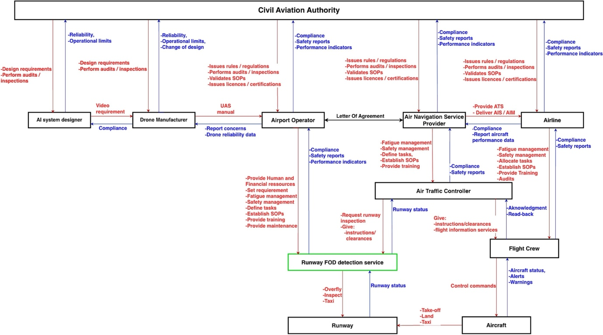
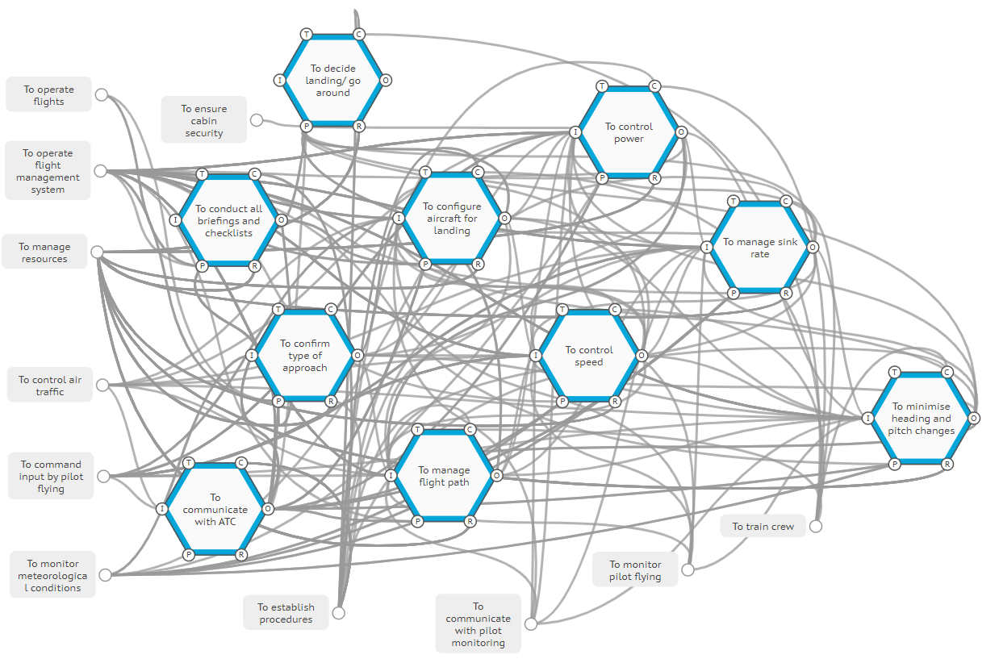
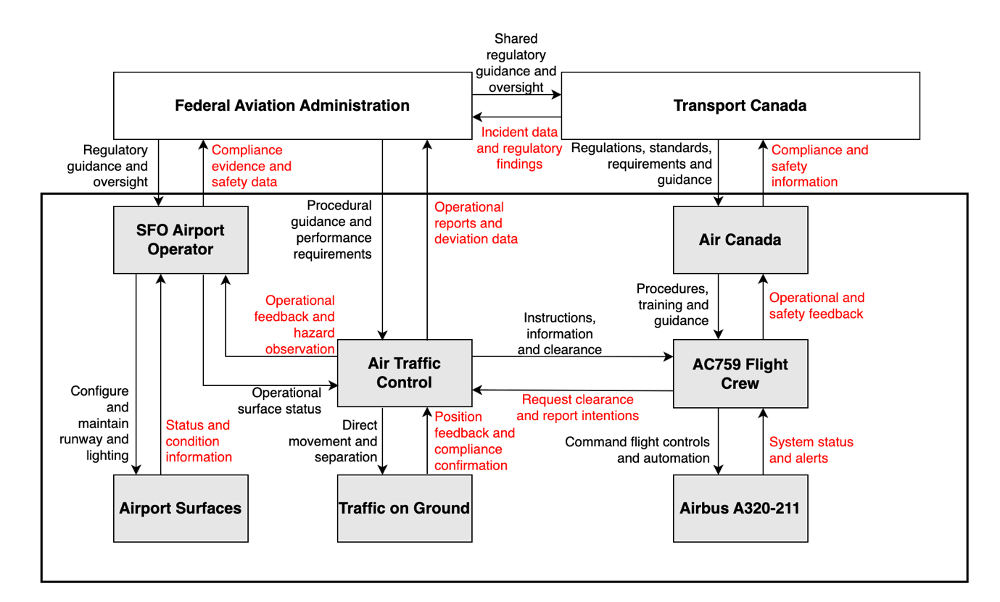

In brief
- STPA, FRAM and CAST are all systems-based approaches, but they are not interchangeable.
- STPA is mainly a prospective hazard analysis method: it helps ask what could go wrong and what safety constraints are needed.
- FRAM is a functional modelling method: it helps examine everyday work, performance variability and functional couplings.
- CAST is mainly a retrospective event analysis method: it helps ask why the controls, feedback and decision-making in a system did not prevent an event.
- The best method is the one that fits the safety question, the available evidence and the maturity of the system.
Why this topic matters
Systems-based safety methods are sometimes discussed as if they are simply different tools for the same task. That can be misleading. STPA, FRAM and CAST all help analysts move beyond simple cause-and-effect explanations, but they do so for different purposes.
The method you choose shapes what you notice. It influences the questions you ask, the evidence you collect, the people you involve, and the kind of recommendations you produce. A method can help make the system visible, but it can also narrow the analysis if it is used for the wrong purpose.
This is especially important in complex socio-technical systems, where safety depends on interactions between people, technology, procedures, organisations and regulation. A component may work as designed, a person may act reasonably in the moment, and yet the system may still drift into a hazardous state. Systems-based methods are useful because they help us look at those interactions rather than stopping at the most visible action or failure.
Why compare STPA, FRAM and CAST?
Strictly speaking, STPA and CAST should not be treated as equivalent alternatives. STPA is usually used before an accident or during design and operation to identify hazards and safety constraints. CAST is usually used after an incident, accident or near miss to understand why existing controls were not effective. They share a systems-theoretic foundation, but they are applied at different points in the safety lifecycle.
FRAM is different again. It is not built around control actions in the same way as STPA and CAST. It models work as a set of functions and examines how variability in everyday performance may combine. FRAM can support prospective analysis, incident analysis, process understanding and resilience-oriented learning, but its distinctive strength is helping analysts understand work-as-done and how everyday performance varies.
For that reason, this page does not present the three methods as competitors. It presents them as three ways of asking better safety questions.
A simple way to think about the three methods
- STPA asks: what losses do we want to prevent, what hazards could lead to those losses, and what controls or constraints are needed?
- FRAM asks: how does the work actually happen, how does it vary, and how might variability in one function affect another?
- CAST asks: given that an event occurred, why did the system’s controls, feedback and decision-making processes fail to prevent or recover from it?
These questions sound simple, but they lead to different kinds of analysis. STPA is useful when the concern is design, assurance, operational risk or change. FRAM is useful when the concern is everyday work, adaptation, timing, coordination and variability. CAST is useful when the concern is learning from a specific event across technical, operational, organisational and regulatory levels.
What each method helps you see
STPA helps you identify hazards, unsafe control and safety constraints. STPA treats safety as a control problem. The analyst defines the losses to avoid, identifies hazards and system-level constraints, models the control structure, examines unsafe control actions, and develops scenarios that explain how those unsafe control actions could occur. It is particularly helpful when a new system, process or operational concept is being designed or changed.
For example, STPA can help examine how an AI-enabled runway inspection process might become unsafe because of unclear authority, delayed feedback, inadequate operator awareness, or a mismatch between automated detection and operational decision-making. It does not only ask whether a component might fail; it asks whether control, coordination and feedback are sufficient for safe operation.
The figures below are included as examples of the kinds of models these methods can produce; the important point for this guide is what each model helps the analyst think about.

FRAM helps you explore everyday work, adaptation and functional coupling. FRAM models what needs to happen for the system to function. It describes activities as functions and considers how each function depends on aspects such as inputs, outputs, preconditions, resources, controls and time. The focus is on how performance varies in normal work, and how that variability can support success or, under some conditions, contribute to unwanted outcomes.

For example, FRAM can help examine how a stable approach in aviation depends on speed control, aircraft configuration, flight path management, monitoring, communication, briefing and timing. It can also help show how small variations in several functions may combine, rather than treating one action as the single cause of an event.
CAST helps you learn from incidents, accidents and near misses. CAST is used after an event. It examines what happened, how the safety control structure operated, what feedback was missing or misleading, what assumptions shaped decisions, and why safety constraints were not enforced. A good CAST analysis does not simply ask who failed. It asks why the system’s prevention and recovery mechanisms were not strong enough.

For example, in an aviation near miss, CAST can help examine how airline procedures, airport configuration, air traffic control, technology, staffing, communication and post-event reporting interacted. This makes it especially useful when recommendations need to address governance, assurance, feedback and organisational learning, not only frontline behaviour.
Choosing the method by starting with the question
A practical way to choose between methods is to avoid starting with the method name. Start with the safety question.
Swipe horizontally to view full table.
| Safety question | Method that often fits | Why | Typical output |
|---|---|---|---|
| What could go wrong in this system, design or operational concept? | STPA | It supports prospective hazard analysis and the identification of safety constraints. | Losses, hazards, control structure, unsafe control actions, causal scenarios and safety requirements. |
| How does everyday work actually happen, and where does it vary? | FRAM | It helps describe work-as-done and the couplings between functions. | Functions, dependencies, variability, couplings, how variability may combine or amplify, and ways to monitor or manage variability. |
| How did this incident, accident or near miss become possible? | CAST | It supports retrospective analysis of control, feedback, decisions and systemic constraints. | Safety control structure, control and feedback weaknesses, decision context, systemic contributors and recommendations. |
| Why did normal work drift close to the boundary of safety? | FRAM, sometimes supported by STPA or CAST | FRAM helps explain adaptation and variability; STPA or CAST can add a control-and-constraint perspective. | A richer account of work-as-done, weak controls, missing feedback and improvement options. |
| What should change after an event? | CAST, sometimes supported by FRAM | CAST helps identify where controls and feedback should be strengthened; FRAM can show how recommendations may affect everyday work. | System-level recommendations, improved controls, clearer feedback, monitoring and learning actions. |
Using methods together
There are times when more than one method is useful. A lifecycle view can help. STPA may be used early to design safety into a system. FRAM may then help understand how the work is actually carried out once the system is in operation. CAST may be used after an event to examine why controls did not prevent or recover the situation.
CAST and FRAM can also be complementary in event analysis. CAST is strong for examining safety constraints, responsibilities, control structures, feedback and organisational assurance. FRAM is strong for examining performance variability, functional couplings, adaptation and recovery. Used together, they can show both how the system was meant to be controlled and how work actually unfolded under local conditions.
However, combining methods should not be done just to make an analysis look more comprehensive. Each additional method adds time, data demands and interpretation work. The value comes from using each method for a clear reason.
Common mistakes to avoid
- Starting with the method rather than the problem. The method should serve the safety question, not the other way around.
- Treating diagrams as the analysis. A control structure, FRAM model or event map is useful only if it supports reasoning, evidence and learning.
- Stopping at human action. If the conclusion is only that someone should have done something differently, the analysis has probably stopped too early.
- Making the boundary too narrow. A narrow boundary can make the analysis manageable, but it may hide organisational, regulatory, design or feedback issues.
- Making the boundary too broad. A broad boundary can make everything appear connected without showing which relationships actually matter.
- Forgetting uncertainty. Systems-based methods improve understanding, but they do not remove uncertainty. The analyst still needs to be clear about evidence quality, assumptions and limits.
Limitations and cautions
No method can replace expertise, evidence or judgement. STPA, FRAM and CAST are powerful because they encourage structured thinking about complex systems, but the quality of the output still depends on the analyst, the data, the system boundary and the involvement of people who understand the work.
It is also important to remember that systems methods are not automatically better in every situation. A simple component failure may be adequately analysed with a simpler method. A complex socio-technical problem, however, usually needs an approach that can examine interaction, feedback, adaptation and organisational context.
The aim is not to use the most sophisticated method. The aim is to choose a method that helps people understand the system well enough to make it safer.
Related publication(s)
- Kaya, G.K. (2021). A system safety approach to assessing risks in the sepsis treatment process. Applied Ergonomics. 94,103408. DOI: 10.1016/j.apergo.2021.103408.
- Kaya, G.K. and Hocaoglu, M.F. (2020). Semi-quantitative application to the Functional Resonance Analysis Method for supporting safety management in a complex health-care process. Reliability Engineering & System Safety. 202, 106970. DOI: 10.1016/j.ress.2020.106970.
- Kaya, G.K., Bovell, D., Sujan, M. and Braithwaite, G. (2025). Large language models powered system safety assessment: applying STPA and FRAM. Safety Science. 191, 106960. DOI: 10.1016/j.ssci.2025.106960.
- Kaya, G.K., Humphreys, M., Camelia, F. and Chatzimichailidou, M. (2025). Integrating causal analysis based on system theory with network modelling to enhance accident analysis. Ergonomics. 1-28. DOI: 10.1080/00140139.2025.2516060.
- Kaya, G.K., Ozturk, F. and Sariguzel, E.E. (2021). System-based risk analysis in a tram operating system: integrating Monte Carlo simulation with the functional resonance analysis method. Reliability Engineering & System Safety. 215, 107835. DOI: 10.1016/j.ress.2021.107835.
- Kaya, G.K., Stallard, R., St-Laurent, M., Li, W.-C. and Sujan, M. (2026). Exploring unstable approaches in aviation: utilising functional resonance analysis method. The Aeronautical Journal. 130(1345):917-943. DOI: 10.1017/aer.2025.10108.
- Losi, E., Kaya, G.K., Camelia, F., Chatzimichailidou, M., Slater, D.H., Patriarca, R. and Sujan, M. (2026). Systemic safety analysis of complex socio-technical events: insights from applying CAST and FRAM. Reliability Engineering & System Safety, 277(3), 113115. DOI: 10.1016/j.ress.2026.113115.
Selected references
- Bjerga, T., Aven, T. and Zio, E. (2016). Uncertainty treatment in risk analysis of complex systems: the cases of STAMP and FRAM. Reliability Engineering & System Safety, 156, 203–209. DOI: 10.1016/j.ress.2016.08.004
- Hollnagel, E. (2012). FRAM: The Functional Resonance Analysis Method: Modelling Complex Socio-technical Systems. Ashgate.
- Hulme, A., Stanton, N.A., Walker, G.H., Waterson, P. and Salmon, P.M. (2024). Testing the reliability of accident analysis methods: a comparison of AcciMap, STAMP-CAST and AcciNet. Ergonomics, 67(5), 695–715. DOI: 10.1080/00140139.2023.2240048
- Leveson, N.G. (2011). Engineering a Safer World: Systems Thinking Applied to Safety. MIT Press.
- Leveson, N.G. (2019). CAST Handbook: How to Learn More from Incidents and Accidents.
- Leveson, N.G. and Thomas, J.P. (2018). STPA Handbook.
- Underwood, P. and Waterson, P. (2013). Systemic accident analysis: examining the gap between research and practice. Accident Analysis & Prevention, 55, 154–164. DOI: 10.1016/j.aap.2013.02.041.
- Yousefi, A., Rodriguez Hernandez, M. and Lopez Peña, V. (2019). Systemic accident analysis models: a comparison study between AcciMap, FRAM, and STAMP. Process Safety Progress, 38(2), e12002. DOI: 10.1002/prs.12002